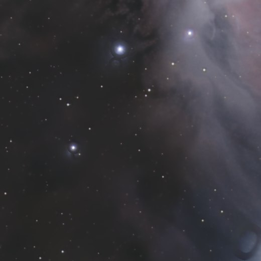
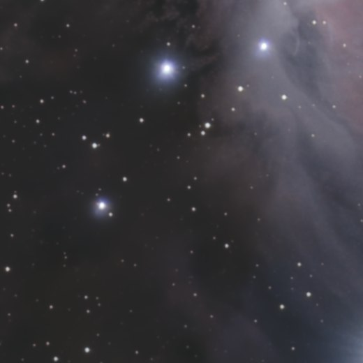

Stars
Reduce stars tool
Shrinks the stars, halos included, or removes them.
ExperimentalCOSMOStars, the in-house network of this tool, is experimental and not recommended for finished images: defects remain on some images. The tool can also run with RC-Astro StarXTerminator, from your own licensed installation. On the stars layer of a separation, the network is not used.
How to use it
- Select the step in the sequence, or add the tool from Tools.
- Set it, then press Preview: the step is computed without being applied.
- Press Apply to keep the result, or change the settings and preview again.
Settings
- Reduce / Remove
- Shrink the stars, or fade them out.
- Star size
- Each star shrinks around its centre, halo included, keeping its soft profile.
- Removal
- Fades the stars out, towards the starless image. Instant.
- Result / Starless / Stars only
- What the image shows while you set the tool.
When to use it
When the stars crowd the nebula. Runs on the whole image, or on the stars layer after a separation.
Image
Works on a linear or a stretched image.
Example


withoutwith Reduce stars